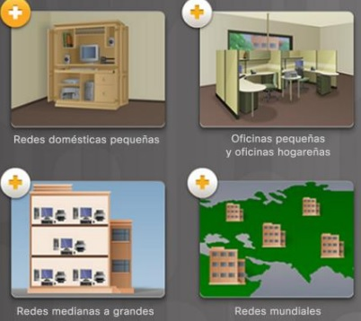

Es el conjunto de insrumentos empleados para manejar informacion Las herramientas informáticas son programas, aplicaciones o software que se utilizan para realizar tareas en computadoras, tablets o smartphones.
Son el conjunto de recursos y herramientas,equipos, programas informaticos,aplicacaciones,redes y medios;que permite la complicacion procesamiento,almacenamiento,trasmicion de informacion como voz,datos,video e imagenes en pro de la eficiencia y la agilidad
| VENTAJAS DE LAS TICS | DESVENTAJAS DE LAS TICS | |
|---|---|---|
| EN LA EDUCACION |
ACCESO A DIVERSAS FUENTES DE INFORMACION.
COMUNICACION EN TIEMPO REAL. MAYOR INTERACCION. DESARROLLO DE NUEVAS HABILIDADES FUERA DEL CURRICULO OFICIAL APRENDIZAJE PERSONALIZADO |
RIESGO DE DESIGUALDAD Y EXCLUSION. PUEDE SER UNA FUENTE DE DISTRACCION. ACCESO A INFORMACION DE BAJA CALIDAD. DIZMINUYEN LAS HABILIDADES MANUALES |
| EN LA SOCIEDAD | DEMOCRATIZACION DEL ACCESO A LA INFORMACION. OPTIMIZACION DE TRAMITES BUROCRATICOS. ACCESO A PRODUCTOS Y SERVICIOS SIN LIMITES GEOGRAFICOS. ACCESO A NUEVOS TECNOLOGIAS A PRECIOS ACCESIBLES | PELIGRO A LA EXPOSICION DE DATOS PERSONALES. ACCESO A LA INFORMACION FALSA. EXCLUSION Y DESIGUALDAD. |
| EN LAS EMPRESAS |
EFICIENCIA EN LA TOMA DE DESICIONES.
NUEVAS MODALIDADES DE TRABAJO NUEVAS OPOTUNIDADES DE CRECIMIENTO |
REDUCCION DE PUESTOS DE TRABAJO.
RIESGO DE CIBERATAQUES |
| EN EL HOGAR |
Facilitan la comunicacion
Permiten al acceso a la comunicacion y el trabajo |
Menos interaccion familiar
Contenido inapropiado. |
LOS BENEFICIOS DE LAS TIC EN LA GESTION DE EMPRESAS TE BRINDARAN LA OPORTUNDAD DE ANALIZAR DATOS ESPECIFICOS PARA PALNIFICAR NEGOCIOS. TAMBIEN TE OFRECERAN DIVERSAS HERRAMIENTAS RESOLUSIVAS PARA LOS PROBLEMAS MAS COMPLEJOS Y PARA LOS PROBLEMAS MAS COMPLEJOS Y PARA PLANIFICAR
Es un conjunto de computadoras y software que están conectados por dispositivos que reciben y envían información por transmisión guiada, transmisión inalámbrica o satélites de comunicación con el objetivo de compartir recursos como datos, programas y hardware.

| VENTAJAS | DESVENTAJAS |
|---|